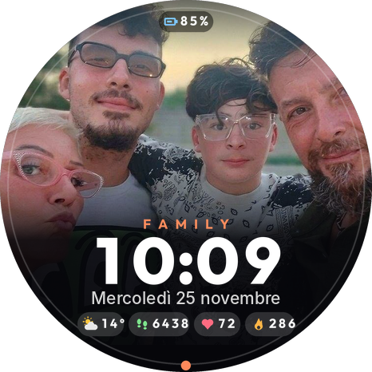
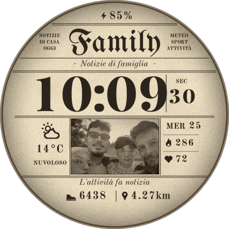
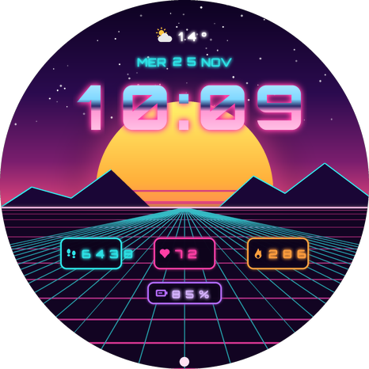
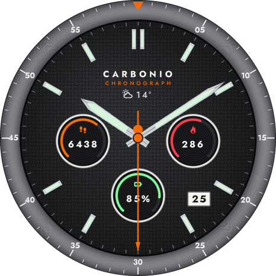
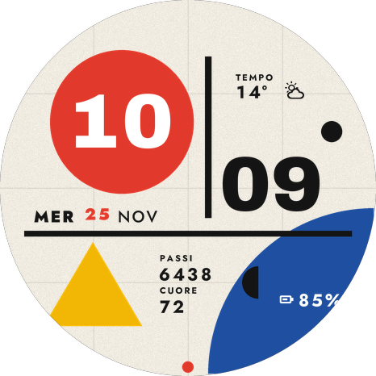
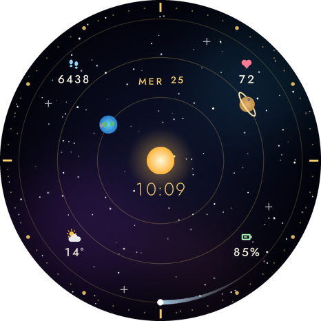
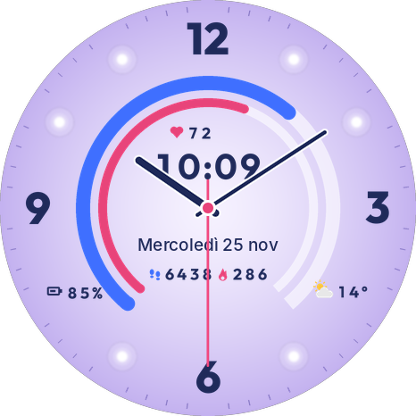
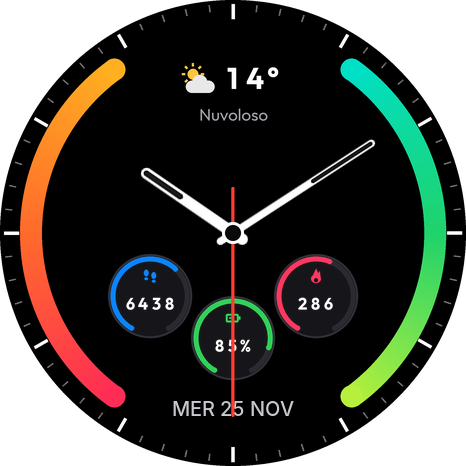
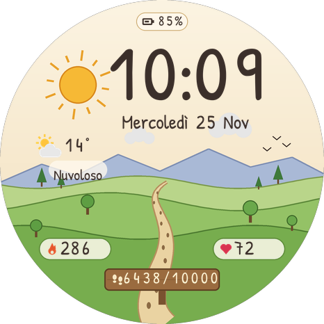
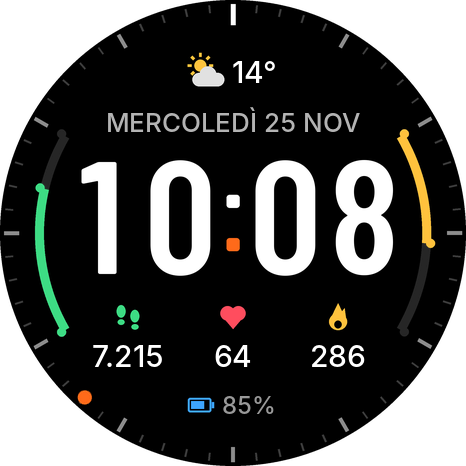

Family
Foto di famiglia a tutto schermo con ora, data e dati su vetro scuro. Tocca meteo, passi, battito, calorie, ora o batteria.
Amazfit Active 2 (rotondo) · pacchetto
Installazione: app Zepp → Profilo → il tuo orologio → in fondo Modalità sviluppatore → Scansiona il QR.
Modalità sviluppatore: Profilo → Impostazioni → Info → tocca 7 volte il logo Zepp.

Foto di famiglia a tutto schermo con ora, data e dati su vetro scuro. Tocca meteo, passi, battito, calorie, ora o batteria.
Amazfit Active 2 (rotondo) · pacchetto

Prima pagina d'epoca con la foto di famiglia: testata gotica, carta invecchiata. Tocca meteo, ora, calorie, battito, passi o batteria.
Amazfit Active 2 (rotondo) · pacchetto

Tramonto retrò anni '80 con sole a strisce, griglia al neon e ora cromata. Tocca meteo, ora, passi, battito, calorie o batteria.
Amazfit Active 2 (rotondo) · pacchetto

Cronografo in fibra di carbonio con indici luminescenti e tre contatori. Tocca passi, batteria, calorie, meteo o il marchio.
Amazfit Active 2 (rotondo) · pacchetto

Composizione geometrica Bauhaus: ore nel cerchio rosso, minuti in nero. Tocca passi, battito, meteo, batteria o l'ora.
Amazfit Active 2 (rotondo) · pacchetto

Sistema solare: la Terra segna le ore, Saturno i minuti, una cometa i secondi. Tocca passi, battito, batteria, meteo o l'ora.
Amazfit Active 2 (rotondo) · pacchetto

Analogico lavanda con anelli di passi e calorie, ora digitale e meteo. Tocca i dati per aprire l'app.
Amazfit Active 2 (rotondo) · pacchetto

Analogico su nero con bande sfumate e tre quadranti per passi, batteria e calorie. Tocca i dati per aprire l'app.
Amazfit Active 2 (rotondo) · pacchetto

Paesaggio illustrato con sole, colline e il sentiero dei passi. Tocca meteo, ora, calorie, battito, passi o batteria.
Amazfit Active 2 (rotondo) · pacchetto

Digitale interattivo: tocca meteo, ora, passi, battito, calorie o batteria per aprire la rispettiva app. Data in italiano, archi obiettivo passi/calorie, AOD.
Amazfit Active 2 (rotondo) · pacchetto